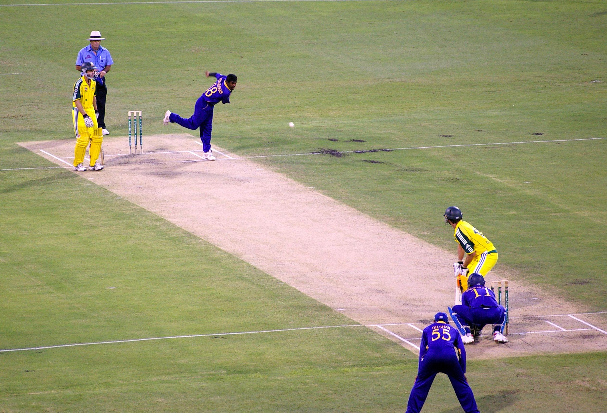

Why Us?
Established in 2022, Cricket Academy (CA) prides itself for providing
cricket coaching platform to the under privileged talented boys and
girls. We pride ourselves in technical and indivdial approach towards
learning.
But first... What is Cricket?
Cricket is a bat-and-ball game played between two teams of eleven
players each on a field at the centre of which is a 22-yard (20-metre)
pitch with a wicket at each end, each comprising two bails balanced on
three stumps. The game proceeds when a player on the fielding team,
called the bowler, "bowls" (propels) the ball from one end of the pitch
towards the wicket at the other end, with an "over" being completed once
they have legally done so six times. The batting side has one player at
each end of the pitch, with the player at the opposite end of the pitch
from the bowler aiming to strike the ball with a bat.

History of Cricket
It is generally believed that cricket originated as a children's game in
the south-eastern counties of England, sometime during the medieval
period. Although there are claims for prior dates, the earliest definite
reference to cricket being played comes from evidence given at a court
case in Guildford in January 1597 (Old Style), equating to January 1598
in the modern calendar. The case concerned ownership of a certain plot
of land and the court heard the testimony of a 59-year-old coroner, John
Derrick, who gave witness that: "Being a scholler in the ffree schoole
of Guldeford hee and diverse of his fellows did runne and play there at
creckett and other plaies." Given Derrick's age, it was about half a
century earlier when he was at school and so it is certain that cricket
was being played c. 1550 by boys in Surrey.The view that it was
originally a children's game is reinforced by Randle Cotgrave's 1611
English-French dictionary in which he defined the noun "crosse" as "the
crooked staff wherewith boys play at cricket" and the verb form
"crosser" as "to play at cricket".